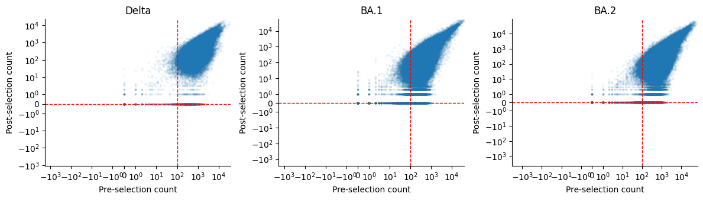
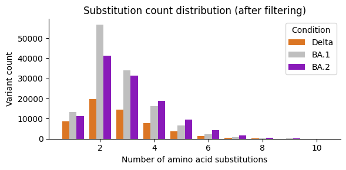
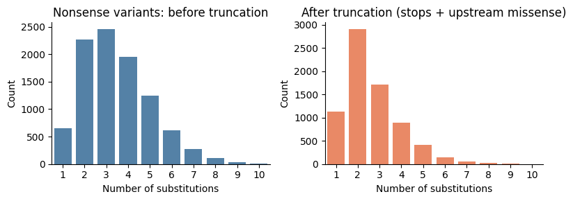
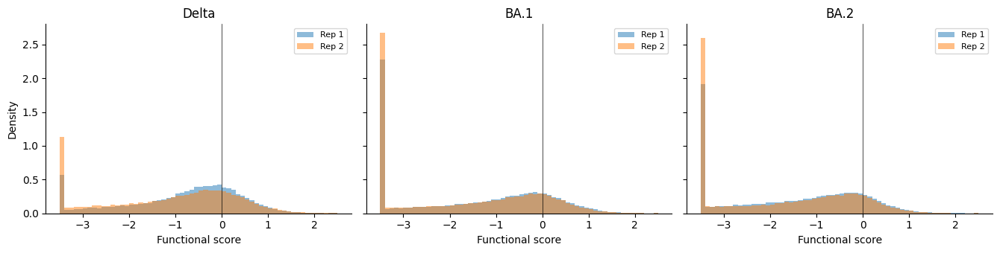
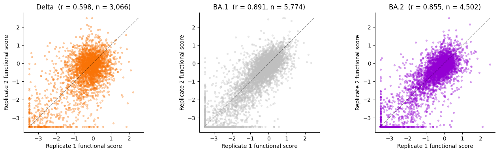

Spike Data Preparation¶
Download raw DMS functional selection data for SARS-CoV-2 spike variants (Delta, BA.1, BA.2), apply improved count-aggregation data preparation, and save training functional scores.
Outline
Download raw data from the public repository (cached for subsequent runs)
Load and concatenate raw functional selection CSVs
Select replicates and map to condition names
Remove deletions and invalid variants
Aggregate barcode counts per (condition, replicate, aa_substitutions)
Apply count-based filtering (pre_count, post_count thresholds)
Apply mutation-number filtering (max_subs)
Truncate nonsense variants (premature-stop logic)
Compute functional scores as log-ratios of aggregated counts
Subtract wildtype score, clip, and save
Replicate correlation analysis
[1]:
import warnings
warnings.filterwarnings("ignore")
import os
import sys
sys.path.insert(0, "notebooks")
import matplotlib.pyplot as plt
import numpy as np
import pandas as pd
import seaborn as sns
from scipy import stats
from _common import download_data, load_config, load_raw_data, truncate_nonsense
%matplotlib inline
[2]:
config_path = "config/config.yaml"
output_dir = None
[3]:
# Parameters
config_path = "config/config.yaml"
output_dir = "results-prod-225-spike-data-prep-improvements"
[4]:
config = load_config(config_path)
spike = config["spike"]
seed = config["seed"]
reference = spike["reference"]
experiment_conditions = spike["experiment_conditions"]
replicate_1_experiments = spike["replicate_1_experiments"]
replicate_2_experiments = spike["replicate_2_experiments"]
pre_count_threshold = spike["pre_count_threshold"]
post_count_threshold = spike["post_count_threshold"]
max_subs = spike["max_subs"]
func_score_clip = spike["func_score_clip"]
pseudocount = spike["pseudocount"]
do_truncate_nonsense = spike["do_truncate_nonsense"]
subsample_frac = spike.get("subsample_frac", None)
condition_colors = spike["condition_colors"]
condition_titles = spike["condition_titles"]
if output_dir is None:
output_dir = spike.get("output_dir", "results")
os.makedirs(output_dir, exist_ok=True)
np.random.seed(seed)
print(f"Reference: {reference}")
print(f"Conditions: {experiment_conditions}")
print(f"Replicate 1: {replicate_1_experiments}")
print(f"Replicate 2: {replicate_2_experiments}")
Reference: Omicron_BA1
Conditions: ['Delta', 'Omicron_BA1', 'Omicron_BA2']
Replicate 1: ['Delta-2', 'Omicron_BA1-2', 'Omicron_BA2-1']
Replicate 2: ['Delta-4', 'Omicron_BA1-3', 'Omicron_BA2-2']
Download and load raw data¶
Download raw functional selection CSVs from the public GitHub repository. Files are cached locally in results/raw_data/ for subsequent runs.
[5]:
print("Downloading raw data (skips if cached)...")
raw_df = load_raw_data(spike, cache_dir=os.path.join(output_dir, "raw_data"))
print(f"Loaded {len(raw_df):,} total variant rows across all experiments")
print(f"Experiments: {sorted(raw_df['condition'].unique())}")
Downloading raw data (skips if cached)...
Downloading https://raw.githubusercontent.com/matsengrp/SARS-CoV-2_spike_multidms/main/data/Delta/functional_selections.csv
Downloading https://raw.githubusercontent.com/matsengrp/SARS-CoV-2_spike_multidms/main/data/Delta/Lib-1_2021-10-28_thaw-1_VSVG_control_1_vs_2021-12-14_thaw-1_no-antibody_control_1_func_scores.csv
Downloading https://raw.githubusercontent.com/matsengrp/SARS-CoV-2_spike_multidms/main/data/Delta/Lib-1_2021-10-28_thaw-1_VSVG_control_2_vs_2021-12-14_thaw-1_no-antibody_control_2_func_scores.csv
Downloading https://raw.githubusercontent.com/matsengrp/SARS-CoV-2_spike_multidms/main/data/Delta/Lib-3_2021-10-28_thaw-1_VSVG_control_1_vs_2021-12-14_thaw-1_no-antibody_control_1_func_scores.csv
Downloading https://raw.githubusercontent.com/matsengrp/SARS-CoV-2_spike_multidms/main/data/Delta/Lib-3_2021-10-28_thaw-1_VSVG_control_2_vs_2021-12-14_thaw-1_no-antibody_control_2_func_scores.csv
Downloading https://raw.githubusercontent.com/matsengrp/SARS-CoV-2_spike_multidms/main/data/Delta/Lib-4_2021-10-28_thaw-1_VSVG_control_1_vs_2021-12-14_thaw-1_no-antibody_control_1_func_scores.csv
Downloading https://raw.githubusercontent.com/matsengrp/SARS-CoV-2_spike_multidms/main/data/Delta/Lib-4_2021-10-28_thaw-1_VSVG_control_2_vs_2021-12-14_thaw-1_no-antibody_control_2_func_scores.csv
Downloading https://raw.githubusercontent.com/matsengrp/SARS-CoV-2_spike_multidms/main/data/Delta/Lib-2_2021-10-28_thaw-1_VSVG_control_1_vs_2021-11-28_thaw-1_no-antibody_control_1_func_scores.csv
Downloading https://raw.githubusercontent.com/matsengrp/SARS-CoV-2_spike_multidms/main/data/Delta/Lib-2_2021-10-28_thaw-1_VSVG_control_2_vs_2021-11-28_thaw-1_no-antibody_control_2_func_scores.csv
Downloading https://raw.githubusercontent.com/matsengrp/SARS-CoV-2_spike_multidms/main/data/Omicron_BA1/functional_selections.csv
Downloading https://raw.githubusercontent.com/matsengrp/SARS-CoV-2_spike_multidms/main/data/Omicron_BA1/Lib-1_2022-03-25_thaw-1_VSVG_control_1_vs_2022-04-13_thaw-1_no-antibody_control_1_func_scores.csv
Downloading https://raw.githubusercontent.com/matsengrp/SARS-CoV-2_spike_multidms/main/data/Omicron_BA1/Lib-1_2022-03-25_thaw-1_VSVG_control_2_vs_2022-04-13_thaw-1_no-antibody_control_2_func_scores.csv
Downloading https://raw.githubusercontent.com/matsengrp/SARS-CoV-2_spike_multidms/main/data/Omicron_BA1/Lib-2_2022-06-22_thaw-1_VSVG_control_1_vs_2022-06-22_thaw-1_no-antibody_control_1_func_scores.csv
Downloading https://raw.githubusercontent.com/matsengrp/SARS-CoV-2_spike_multidms/main/data/Omicron_BA1/Lib-3_2022-06-22_thaw-1_VSVG_control_1_vs_2022-06-22_thaw-1_no-antibody_control_1_func_scores.csv
Downloading https://raw.githubusercontent.com/matsengrp/SARS-CoV-2_spike_multidms/main/data/Omicron_BA2/functional_selections.csv
Downloading https://raw.githubusercontent.com/matsengrp/SARS-CoV-2_spike_multidms/main/data/Omicron_BA2/Lib-1_2022-10-22_thaw-1_VSVG_control_1_vs_2022-10-22_thaw-1_no-antibody_control_1_func_scores.csv
Downloading https://raw.githubusercontent.com/matsengrp/SARS-CoV-2_spike_multidms/main/data/Omicron_BA2/Lib-2_2022-10-22_thaw-1_VSVG_control_1_vs_2022-10-22_thaw-1_no-antibody_control_1_func_scores.csv
Downloading https://raw.githubusercontent.com/matsengrp/SARS-CoV-2_spike_multidms/main/data/Omicron_BA2/Lib-1_2022-10-22_thaw-2_VSVG_control_1_vs_2022-10-22_thaw-2_no-antibody_control_1_func_scores.csv
Downloading https://raw.githubusercontent.com/matsengrp/SARS-CoV-2_spike_multidms/main/data/Omicron_BA2/Lib-2_2022-10-22_thaw-2_VSVG_control_1_vs_2022-10-22_thaw-2_no-antibody_control_1_func_scores.csv
Loaded 1,135,096 total variant rows across all experiments
Experiments: ['Delta-1', 'Delta-2', 'Delta-3', 'Delta-4', 'Omicron_BA1-1', 'Omicron_BA1-2', 'Omicron_BA1-3', 'Omicron_BA2-1', 'Omicron_BA2-2']
Select replicates¶
Map experiment names (e.g. Delta-2) to condition + replicate number.
[6]:
rep1_df = (
raw_df.query("condition in @replicate_1_experiments")
.assign(
condition=lambda df: df["condition"].replace(
dict(zip(replicate_1_experiments, experiment_conditions))
),
replicate="1",
)
)
rep2_df = (
raw_df.query("condition in @replicate_2_experiments")
.assign(
condition=lambda df: df["condition"].replace(
dict(zip(replicate_2_experiments, experiment_conditions))
),
replicate="2",
)
)
df = pd.concat([rep1_df, rep2_df], ignore_index=True)
print(f"Selected {len(df):,} variant rows across replicates")
print(f"Conditions: {sorted(df['condition'].unique())}")
print(f"Variants per condition/replicate:")
print(df.groupby(["condition", "replicate"]).size().to_string())
Selected 780,734 variant rows across replicates
Conditions: ['Delta', 'Omicron_BA1', 'Omicron_BA2']
Variants per condition/replicate:
condition replicate
Delta 1 83172
2 79388
Omicron_BA1 1 140643
2 125127
Omicron_BA2 1 181984
2 170420
Remove deletions and invalid variants¶
Drop variants with deletion characters (-) in substitutions, and variants with stop-codon wildtype or non-numeric site numbering.
[7]:
n_before = len(df)
# Remove deletions
has_deletion = df["aa_substitutions"].str.contains("-", regex=False)
df = df.loc[~has_deletion].copy()
print(f"Removed {has_deletion.sum():,} variants with deletions")
# Remove stop-codon wildtypes (substitutions starting with *)
has_stop_wt = df["aa_substitutions"].str.contains(r"(^|\s)\*", regex=True)
df = df.loc[~has_stop_wt].copy()
print(f"Removed {has_stop_wt.sum():,} variants with stop-codon wildtype")
# Remove non-numeric site numbering (indels)
has_non_numeric = df["aa_substitutions"].str.contains(
r"[^0-9][A-Za-z*\-](\s|$)", regex=True
)
df = df.loc[~has_non_numeric].copy()
print(f"Removed {has_non_numeric.sum():,} variants with non-numeric sites")
print(f"\nTotal removed: {n_before - len(df):,} ({len(df):,} remaining)")
Removed 16,035 variants with deletions
Removed 497 variants with stop-codon wildtype
Removed 9,806 variants with non-numeric sites
Total removed: 26,338 (754,396 remaining)
Aggregate barcode counts¶
Sum pre-selection and post-selection counts for identical variants (same condition, replicate, and amino acid substitutions). This is the improved count-aggregation approach from the jaxmodels empirical fits notebook — statistically more principled than averaging pre-computed functional scores.
[8]:
df["n_subs"] = df["aa_substitutions"].apply(
lambda x: len(x.split()) if x.strip() else 0
)
n_before_agg = len(df)
df = (
df.groupby(["condition", "replicate", "aa_substitutions"], dropna=False)
.agg({"n_subs": "first", "pre_count": "sum", "post_count": "sum"})
.reset_index()
)
print(f"Aggregated {n_before_agg:,} barcode rows \u2192 {len(df):,} unique variants")
Aggregated 754,396 barcode rows → 326,545 unique variants
Pre vs post count distribution¶
[9]:
mutant_mask = df["aa_substitutions"] != ""
fig, axes = plt.subplots(1, len(experiment_conditions), figsize=(4 * len(experiment_conditions), 3.5))
for ax, cond in zip(axes, experiment_conditions):
cond_mask = (df["condition"] == cond) & mutant_mask
ax.scatter(
df.loc[cond_mask, "pre_count"],
df.loc[cond_mask, "post_count"],
s=3, alpha=0.05, rasterized=True,
)
ax.axvline(pre_count_threshold, color="red", linestyle="--", linewidth=1)
ax.axhline(post_count_threshold, color="red", linestyle="--", linewidth=1)
ax.set_xscale("symlog", linthresh=1, linscale=0.5)
ax.set_yscale("symlog", linthresh=1, linscale=0.5)
ax.set_xlabel("Pre-selection count")
ax.set_ylabel("Post-selection count")
ax.set_title(condition_titles.get(cond, cond))
ax.spines[["top", "right"]].set_visible(False)
plt.tight_layout()
plt.show()

Count-based filtering¶
Filter variants by minimum pre-selection and post-selection counts.
[10]:
n_before = len(df)
df = df.query(
"pre_count >= @pre_count_threshold and post_count >= @post_count_threshold"
).copy()
print(
f"Count filter (pre >= {pre_count_threshold}, post >= {post_count_threshold}): "
f"{n_before - len(df):,} removed, {len(df):,} remaining"
)
Count filter (pre >= 100, post >= 0): 21,092 removed, 305,453 remaining
Mutation-number filtering¶
[11]:
n_before = len(df)
df = df.query("n_subs <= @max_subs").copy()
print(
f"Mutation-number filter (n_subs <= {max_subs}): "
f"{n_before - len(df):,} removed, {len(df):,} remaining"
)
Mutation-number filter (n_subs <= 10): 101 removed, 305,352 remaining
Substitution count distribution¶
[12]:
fig, ax = plt.subplots(figsize=(6, 3))
sns.countplot(
data=df[df["aa_substitutions"] != ""],
x="n_subs", hue="condition",
palette=condition_colors,
native_scale=True, ax=ax,
)
ax.set_xlabel("Number of amino acid substitutions")
ax.set_ylabel("Variant count")
ax.set_title("Substitution count distribution (after filtering)")
ax.spines[["top", "right"]].set_visible(False)
ax.legend(title="Condition", labels=[condition_titles.get(c, c) for c in experiment_conditions])
plt.tight_layout()
plt.show()

Premature-stop truncation (stops + upstream missense retained)¶
For variants containing stop codons, truncate mutations to include only those up to and including the first stop. Then re-aggregate counts for newly identical variants. Truncated variants that retain upstream missense mutations (e.g. A100G D200*) are kept — the missense effect on selection is real since it occurred before the stop.
[13]:
nonsense_mask = df["aa_substitutions"].str.contains("*", regex=False)
fig, axes = plt.subplots(1, 2, figsize=(8, 3))
sns.countplot(
data=df.loc[nonsense_mask], x="n_subs",
ax=axes[0], color="steelblue",
)
axes[0].set_title("Nonsense variants: before truncation")
axes[0].set_xlabel("Number of substitutions")
axes[0].set_ylabel("Count")
axes[0].spines[["top", "right"]].set_visible(False)
if do_truncate_nonsense:
n_before = len(df)
df = df.apply(truncate_nonsense, axis=1)
# Re-aggregate identical variants after truncation
df = (
df.groupby(["condition", "replicate", "aa_substitutions"], dropna=False)
.agg({"n_subs": "first", "pre_count": "sum", "post_count": "sum"})
.reset_index()
)
print(
f"Nonsense truncation: {n_before} → {len(df)} variants "
f"({n_before - len(df)} removed/merged)"
)
nonsense_mask_after = df["aa_substitutions"].str.contains("*", regex=False)
sns.countplot(
data=df.loc[nonsense_mask_after], x="n_subs",
ax=axes[1], color="coral",
)
axes[1].set_title("After truncation (stops + upstream missense)")
else:
axes[1].set_title("Truncation disabled")
axes[1].set_xlabel("Number of substitutions")
axes[1].set_ylabel("Count")
axes[1].spines[["top", "right"]].set_visible(False)
plt.tight_layout()
plt.show()
Nonsense truncation: 305352 → 303007 variants (2345 removed/merged)

Compute functional scores¶
Functional scores are log2-ratios of aggregated counts:
where \(\epsilon\) is the pseudocount. Using log2 aligns with dms-vep-pipeline-3.
[14]:
df["func_score"] = (
np.log2(df["post_count"] + pseudocount) - np.log2(df["pre_count"] + pseudocount)
)
print(f"Raw func_score range: [{df['func_score'].min():.3f}, {df['func_score'].max():.3f}]")
Raw func_score range: [-12.580, 4.357]
Wildtype subtraction¶
Subtract the wildtype functional score within each (condition, replicate) group so that wildtype variants have score 0.
[15]:
wt_scores = (
df.query("aa_substitutions == ''")
.rename(columns={"func_score": "wt_func_score"})
[["condition", "replicate", "wt_func_score"]]
)
assert len(wt_scores) == len(df.groupby(["condition", "replicate"])), (
f"Expected one WT per group, got {len(wt_scores)}"
)
df = df.merge(wt_scores, on=["condition", "replicate"])
df["func_score"] = df["func_score"] - df["wt_func_score"]
df = df.drop(columns=["wt_func_score"])
print("WT-subtracted func_score range: "
f"[{df['func_score'].min():.3f}, {df['func_score'].max():.3f}]")
WT-subtracted func_score range: [-12.293, 4.047]
Clip functional scores¶
[16]:
clip_lo, clip_hi = func_score_clip
n_below = (df["func_score"] < clip_lo).sum()
n_above = (df["func_score"] > clip_hi).sum()
print(f"Clipping to [{clip_lo}, {clip_hi}]: {n_below:,} below, {n_above:,} above")
df["func_score"] = df["func_score"].clip(clip_lo, clip_hi)
Clipping to [-3.5, 2.5]: 60,570 below, 74 above
Subsample (test profile only)¶
[17]:
if subsample_frac is not None:
n_before = len(df)
wt_rows = df[df["aa_substitutions"] == ""]
non_wt_rows = df[df["aa_substitutions"] != ""]
subsampled = pd.concat([
g.sample(frac=subsample_frac, random_state=seed)
for _, g in non_wt_rows.groupby(["condition", "replicate"])
])
df = pd.concat([wt_rows, subsampled]).reset_index(drop=True)
print(f"Subsampled: {n_before:,} \u2192 {len(df):,} variants (frac={subsample_frac}, WT kept)")
else:
print("No subsampling (production profile)")
No subsampling (production profile)
Save training data¶
[18]:
output_cols = ["aa_substitutions", "condition", "replicate", "func_score", "n_subs", "pre_count", "post_count"]
df_out = df[output_cols].copy()
output_path = os.path.join(output_dir, "training_functional_scores.csv")
df_out.to_csv(output_path, index=False)
print(f"Saved {output_path}")
print(f" {len(df_out):,} variants")
print(f" Conditions: {sorted(df_out['condition'].unique())}")
print(f" Replicates: {sorted(df_out['replicate'].unique())}")
print(f"\nVariants per condition/replicate:")
print(df_out.groupby(["condition", "replicate"]).size().to_string())
Saved results-prod-225-spike-data-prep-improvements/training_functional_scores.csv
303,007 variants
Conditions: ['Delta', 'Omicron_BA1', 'Omicron_BA2']
Replicates: ['1', '2']
Variants per condition/replicate:
condition replicate
Delta 1 28046
2 27734
Omicron_BA1 1 68699
2 60538
Omicron_BA2 1 60550
2 57440
Functional score distributions¶
Histograms of functional scores per condition, overlaying both replicates.
[19]:
mutants = df.query("aa_substitutions != ''")
fig, axes = plt.subplots(
1, len(experiment_conditions),
figsize=(4.5 * len(experiment_conditions), 3.5),
sharey=True,
)
for ax, cond in zip(axes, experiment_conditions):
for rep in sorted(mutants["replicate"].unique()):
subset = mutants.query("condition == @cond and replicate == @rep")
ax.hist(
subset["func_score"], bins=60, alpha=0.5,
label=f"Rep {rep}", density=True,
)
ax.axvline(0, color="black", linestyle="-", linewidth=0.5)
ax.set_xlabel("Functional score")
if ax == axes[0]:
ax.set_ylabel("Density")
ax.set_title(condition_titles.get(cond, cond))
ax.legend(fontsize=8)
ax.spines[["top", "right"]].set_visible(False)
plt.tight_layout()
plt.show()

Replicate correlation analysis¶
For each condition, merge replicate 1 and replicate 2 functional scores on aa_substitutions, then compute the Pearson correlation. High replicate correlations (r > 0.8) validate the data preparation.
[20]:
replicates = sorted(df["replicate"].unique())
corr_data = {}
for cond in experiment_conditions:
rep1 = (
df.query("condition == @cond and replicate == @replicates[0] and aa_substitutions != ''")
[["aa_substitutions", "func_score"]]
.rename(columns={"func_score": "rep1"})
)
rep2 = (
df.query("condition == @cond and replicate == @replicates[1] and aa_substitutions != ''")
[["aa_substitutions", "func_score"]]
.rename(columns={"func_score": "rep2"})
)
merged = rep1.merge(rep2, on="aa_substitutions", how="inner")
if len(merged) >= 2:
r, p = stats.pearsonr(merged["rep1"], merged["rep2"])
else:
r, p = float("nan"), float("nan")
corr_data[cond] = {"merged": merged, "r": r, "p": p, "n": len(merged)}
print(f"{condition_titles.get(cond, cond):>6s}: r = {r:.4f} (n = {len(merged):,} shared variants)")
Delta: r = 0.5982 (n = 3,066 shared variants)
BA.1: r = 0.8912 (n = 5,774 shared variants)
BA.2: r = 0.8547 (n = 4,502 shared variants)
[21]:
fig, axes = plt.subplots(
1, len(experiment_conditions),
figsize=(4.5 * len(experiment_conditions), 4),
)
for ax, cond in zip(axes, experiment_conditions):
merged = corr_data[cond]["merged"]
r = corr_data[cond]["r"]
color = condition_colors[cond]
ax.scatter(
merged["rep1"], merged["rep2"],
s=8, alpha=0.3, color=color, rasterized=True,
)
# Identity line
if len(merged) > 0:
lims = [
min(merged["rep1"].min(), merged["rep2"].min()),
max(merged["rep1"].max(), merged["rep2"].max()),
]
ax.plot(lims, lims, "k--", linewidth=0.8, alpha=0.5)
ax.set_xlabel("Replicate 1 functional score")
ax.set_ylabel("Replicate 2 functional score")
title = condition_titles.get(cond, cond)
ax.set_title(f"{title} (r = {r:.3f}, n = {len(merged):,})")
ax.set_aspect("equal", adjustable="box")
ax.spines[["top", "right"]].set_visible(False)
plt.tight_layout()
plt.show()
